Coleta, Detecção e Disponibilização
de Postagens com Potencial de Desinformação
Versão do Documento: 1.8
Este documento serve como consulta rápida para os usuários do Sistema GuaIA, um sistema voltado ao apoio da checagem de veracidade de informações postadas em redes sociais ou na internet em geral. O documento fornece instruções sobre o modo como realizar a coleta e a análise de postagens com potencial de desinformação.
Em sua versão atual, o GuaIA conta com dois fluxos operacionais de cadastro e de processamento de informações, conforme ilustrado na Figura 1.
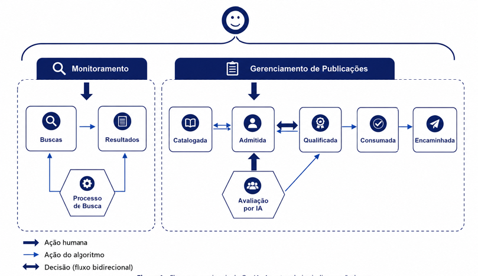
Figura 1. Fluxos operacionais do GuaIA.
As setas cheias indicam ação humana.
O primeiro fluxo, denominado Monitoramento, é um recurso que permite aos usuários buscarem postagens em redes sociais com base em palavras-chave. Os resultados da busca com indícios de desinformação podem ser encaminhados para o fluxo seguinte, denominado Gerenciamento de Publicações, para análise. Também é possível cadastrar postagens manualmente, sendo que essas já iniciam no fluxo de Gerenciamento de Publicação com o estado Admitida. As publicações transitam de um estado para o seguinte por meio de uma ação manual. Cinco estados estão definidos no sistema:
O GuaIA implementa cinco perfis de usuários, os quais são descritos com detalhes na Seção 3.3.1. Cada perfil é responsável por uma atividade e, geralmente, resulta em novas informações ou na mudança de uma publicação de um estado para outro. De maneira simplificada, o perfil “Alimentador” é responsável pelo registro de buscas em redes sociais, pela transferência dos resultados das buscas para a forma de publicações em Catalogada, e pelo cadastro manual de novas publicações. Os usuários com perfil “Curador” fazem a complementação e a validação de publicações com estado Admitida, alterando-as para o estado Qualificada. Usuários com o perfil de “Verificador” são responsáveis por avaliar as publicações Qualificadas, definindo-as como Consumadas. Por fim, usuários com o perfil “Analista” podem acompanhar e marcar as publicações como Encaminhadas. O sistema possui ainda o perfil “Administrador”, o qual pode gerenciar as contas dos demais tipos de usuário.
Dentro do sistema, as publicações são avaliadas por IAs quando estão no estado Catalogada, Admitida, ou Qualificada. Essa avaliação ocorre tanto para o texto principal da publicação quanto para as mídias que foram associadas a elas. A avaliação também pode resultar na definição de três tipos riscos:
Esses riscos são calculados numericamente mas expressos no sistema na forma de cinco níveis categóricos: muito baixo, baixo, médio, alto e muito alto. Quando uma publicação possui, além do seu texto, uma ou mais mídias vinculadas, ela receberá uma avaliação de IA para cada conteúdo individualmente. Esses riscos são então agregados por tipo e aquele de maior nível determina o risco geral da publicação naquele tipo (inveracidade, distorção ou desinformação).
As próximas seções descrevem os recursos do sistema GuaIA conforme aparecem na sua interface gráfica com o usuário.
Funcionalidades gerais do sistema
2 Funcionalidades gerais do sistema
2.1 Instruções de acesso e tela de login
Uma vez cadastrado no sistema, o usuário terá acesso às funcionalidades do GuaIA por meio do portal web do projeto, abrindo o link a seguir:
No menu superior direito da página inicial, o usuário deve clicar na opção “ENTRAR” e escolher um grupo de órgãos da justiça eleitoral por estado, como demonstrado na figura a seguir:
Nesse momento, o usuário será redirecionado para a página de login, ilustrada abaixo. É importante frisar que o sistema GuaIA oferece telas responsivas, que se ajustam automaticamente ao tamanho do dispositivo utilizado. Isso proporciona uma experiência de uso mais fluida e otimizada, independentemente do acesso ser feito por computadores, tablets ou smartphones.
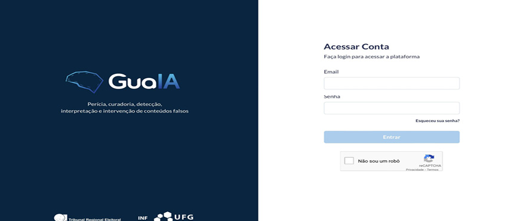
As contas de usuários são criadas sempre pelo usuário com perfil de Administrador. No caso do primeiro acesso, na tela de Acessar Conta, o usuário comum deve clicar no botão Esqueceu sua senha?. Em seguida, na próxima tela (Recuperar Senha), ele deve informar seu e-mail , marcar a opção Não sou um robô e clicar no botão Enviar. Após isso, o sistema enviará um e-mail ao usuário com as instruções para criar a nova senha.
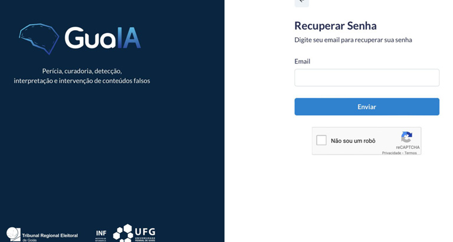
O GuaIA mantém o usuário conectado por um tempo limitado de quatro horas. Durante esse período, o sistema renovará automaticamente o acesso a cada quinze minutos. Após esse período, será necessário fazer login novamente para continuar utilizando o sistema. Esse mecanismo equilibra conveniência e segurança, protegendo o sistema contra acessos indevidos e mantendo a usabilidade.
2.2 Dashboard de Informações - Painel Geral
Ao entrar no sistema GuaIA, é apresentada a tela Painel Geral, a qual consiste em um painel de dashboard com informações consolidadas sobre o cadastro e a análise de publicações suspeitas de desinformação.
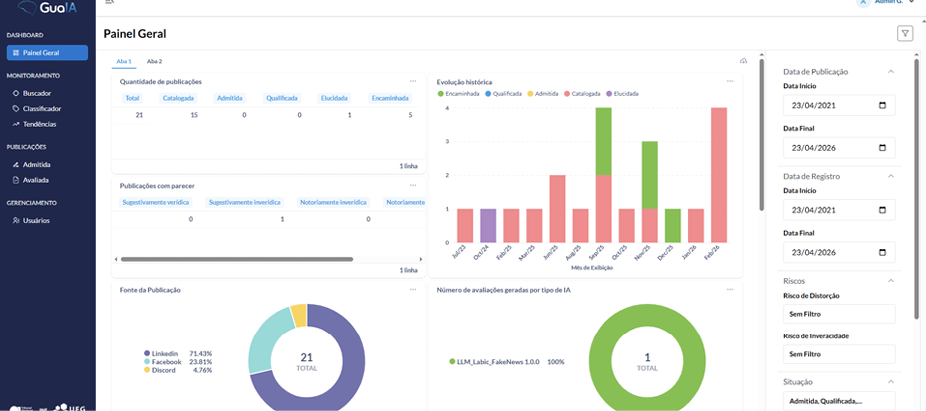
Nessa tela, o usuário pode acompanhar, de forma rápida e intuitiva, os seguintes itens de visualização:
O título no topo da página, como mostrado na figura, indica sempre em qual seção o usuário está navegando — neste caso, em Painel Geral.
Ainda na tela Painel Geral, o usuário pode aplicar filtros para refinar os resultados exibidos nos gráficos e indicadores. Essa funcionalidade permite uma análise mais direcionada, de acordo com critérios específicos.
Os filtros disponíveis são:
Esses filtros podem ser combinados, tornando a análise mais flexível e personalizada.
2.2.2 Exportação de Resultados
No Painel Geral, o usuário conta com a opção de baixar os dados exibidos nos gráficos para análises externas ou relatórios personalizados.
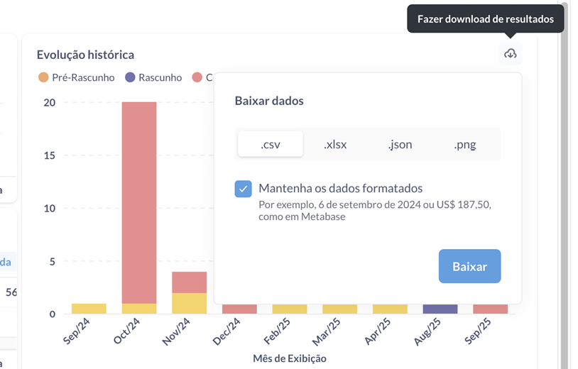
Ao clicar no ícone de download no canto superior direito de cada gráfico, abre-se uma janela com as opções de exportação. Os dados podem ser baixados nos seguintes formatos:
Além disso, há a opção “Mantenha os dados formatados” para as extensões csv, xlsx, json, que preserva formatações como datas e valores monetários, garantindo que as informações sejam exportadas de forma clara e organizada.
Na tela Buscador, localizada no menu de Monitoramento, o usuário pode acompanhar todas as buscas agendadas no sistema GuaIA.
As buscas agendadas funcionam como mecanismos automáticos de extração de dados em mídias sociais, baseados em:
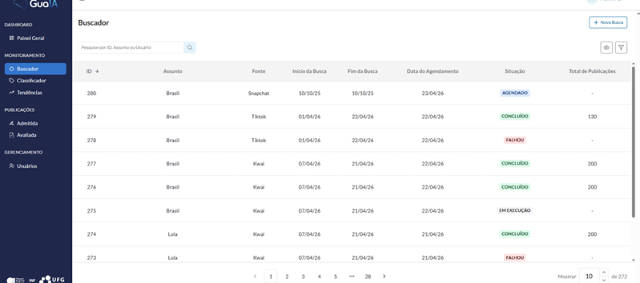
Na tabela exibida, é possível visualizar as colunas:
O usuário também pode criar uma nova busca clicando no botão + Nova Busca, ou limpar os filtros aplicados usando a opção Limpar todos.
Essa funcionalidade permite um monitoramento contínuo e automatizado de termos relevantes, auxiliando na identificação de potenciais publicações de desinformação.
2.3.1 Monitoramento - Criar um novo agendamento de busca
Ao clicar em + Nova Busca, o sistema abre a janela Agendar nova busca, que permite configurar a coleta de dados em redes sociais.
Nesta tela, o usuário deve preencher os seguintes campos:
O sistema aceita expressões lógicas com operadores como AND, OR e NOT.
Exemplo: “Eleições AND fraude” ou “Vacina OR imunização NOT gripe”.
No final do formulário, o usuário pode optar por Cancelar ou confirmar o agendamento clicando em Agendar busca.
Essa funcionalidade permite automatizar a coleta de publicações relacionadas a termos de interesse, dentro de um período e fonte específicos.
2.3.2 Monitoramento - Termos de Busca
Na etapa de configuração da busca, o usuário deve definir os termos que serão utilizados para filtrar as publicações. O sistema oferece duas opções de configuração:
No modo Básico, é possível adicionar condições combinando diferentes tipos de filtros:
Frase exata
Retorna publicações que contenham exatamente a expressão digitada.
Exemplo: “Receita federal” → só serão listadas publicações com essa frase completa.
Todas as palavras
Retorna publicações que contenham todas as palavras informadas, mas não necessariamente na mesma ordem.
Exemplo: eleição democracia → retorna publicações que tenham os dois termos, mesmo que em locais diferentes do texto.
Essas condições podem ser combinadas, permitindo criar expressões lógicas complexas para obter resultados mais precisos.
Exemplo configurado na tela:
O sistema gera automaticamente a Expressão Lógica correspondente:
(“Pec da blindagem”)
AND (“Receita federal”)
AND NOT (Futebol OR meme)
Isso significa que a busca irá retornar apenas publicações que contenham as frases “Pec da blindagem” e “Receita federal”, mas que não mencionem “futebol” nem “meme”.
Após incluir todas as condições necessárias, clique em Agendar busca para confirmar ou em Cancelar para descartar a configuração.
2.3.3 Monitoramento - Regras para Expressão Lógica
Ao elaborar uma expressão lógica no sistema, siga as orientações abaixo:
Operadores disponíveis
AND → retorna publicações que contenham todos os termos.
Exemplo: “reforma tributária” AND imposto
OR → retorna publicações que contenham pelo menos um dos termos.
Exemplo: eleição OR pleito
NOT → exclui publicações que contenham o termo especificado.
Exemplo: “reforma tributária” NOT futebol
O sistema não diferencia letras maiúsculas ou minúsculas.
Exemplo: GOVERNO e governo retornam o mesmo resultado.
Os acentos são opcionais.
Exemplo: saude retornará resultados com saúde e saude.
2.3.4 Monitoramento - Detalhes de uma busca
Para ilustrar, vamos analisar os detalhes de um agendamento já realizado no sistema.
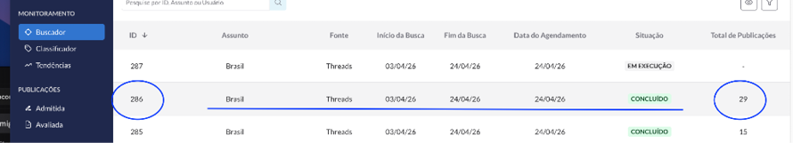
No caso do agendamento destacado:
Essa tela apresenta os detalhes de um agendamento de busca já em execução no sistema.
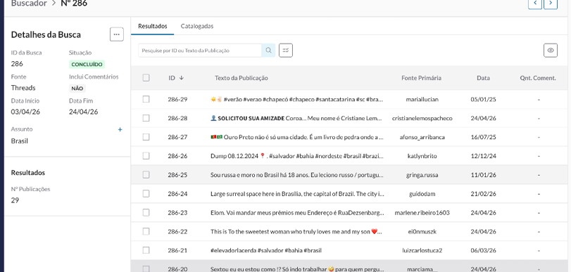
Mostra as informações gerais do agendamento, incluindo:
Exibe as publicações já coletadas conforme os critérios definidos no agendamento.
Cada linha da tabela apresenta:
286-1: indica 286 é ID do agendamento e 1 é a primeira publicação extraída.
286-29: indica 286 é ID do agendamento e 29 é a vigésima nova publicação extraída.
Essa visualização permite que o usuário acompanhe em tempo real os resultados parciais de uma busca, analisando o conteúdo coletado e avaliando se está de acordo com os termos configurados no
agendamento.
2.3.5 Monitoramento - Registrar como Catalogada
O sistema permite ao usuário Selecionar uma publicação coletada, visualizar seus detalhes e, a partir dessa análise, registrá-la para o estado de Catalogada. Na visualização, são exibidas informações tais como data da publicação, fonte primária, canal de reprodução, autor, alegações, o texto da publicação. Além disso, o usuário tem acesso a metadados da postagem, incluindo, por exemplo, número de visualizações, curtidas, comentários, duração e qualidade do vídeo.
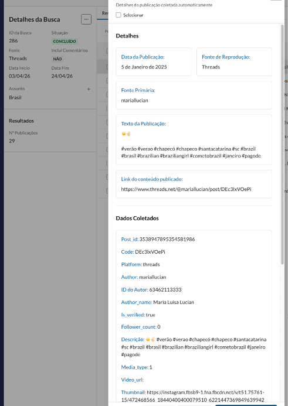
Na tela anterior, o usuário tem a opção de selecionar as publicações coletadas individualmente, navegar entre elas utilizando os botões de Anterior e Próxima, e, ao final, encaminhar as escolhidas para a etapa de Catalogada.
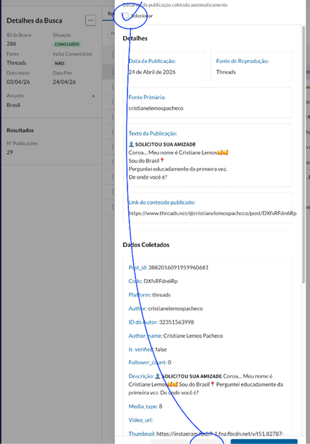
Se o usuário optar por fechar a caixa de diálogo clicando no X no canto superior direito, ele retornará à tela anterior, onde poderá visualizar as publicações coletadas previamente selecionadas. No exemplo exibido, é possível observar que foram selecionadas quatro publicações, identificadas pelos IDs 286-29, 286-27, 286-24, 286-23. Essa visualização facilita o acompanhamento e a conferência das publicações marcadas antes do envio para o Catalogada.
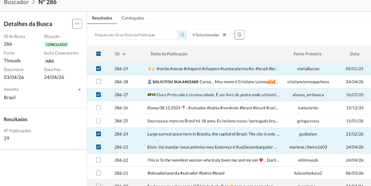
Na tela apresentada, o sistema mostra no topo a quantidade de publicações selecionadas (no exemplo: 4 Selecionadas). Para prosseguir, o usuário deve clicar no botão de envio para Catalogada (ícone destacado na imagem). Ao fazer isso, todas as publicações selecionadas serão movidas para a aba Catalogadas, no qual serão submetidas à etapa de curadoria.
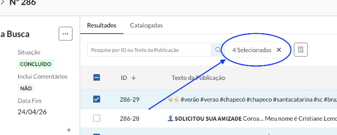
Quando o usuário clica no botão “Registrar como Catalogada”, o sistema exibe uma mensagem de confirmação, como mostrado na tela.
A mensagem informa a quantidade de publicações que serão movidas para a área de Catalogada (neste exemplo: 4 publicações).
O usuário pode então escolher entre as opções “Voltar” (para cancelar a operação) ou “Enviar” (para confirmar o envio).
Assim, apenas após essa confirmação as publicações selecionadas são efetivamente transferidas para a aba Catalogadas.
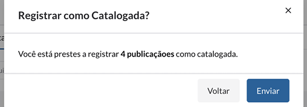
Além da seleção múltipla, o sistema também permite enviar diretamente uma publicação coletada para o Catalogada enquanto ela está aberta na tela de detalhes. Nesse caso, ao clicar no botão “Registrar como Catalogada” dentro da caixa de diálogo, somente a publicação exibida será enviada. O comportamento da tela é diferente: a caixa de diálogo é automaticamente fechada, e o usuário não consegue navegar para a próxima publicação. Esse fluxo é útil quando se deseja encaminhar rapidamente uma publicação individual, sem precisar passar pela seleção de múltiplos resultados.
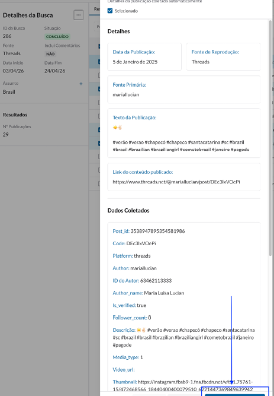
Essa etapa funciona como um filtro inicial, no qual as publicações passam por uma curadoria do responsável, garantindo que contenham todas as informações necessárias antes de serem enviadas para a ferramenta de IA. Somente as publicações que permanecem no estado de Admitida são efetivamente analisadas pela IA.
2.3.6 Monitoramento - Duplicar Busca Agendada
O sistema também disponibiliza a opção de duplicar uma busca já agendada, permitindo que o usuário replique rapidamente os parâmetros de uma busca anterior sem a necessidade de configurar tudo novamente. Essa funcionalidade é útil para criar novos agendamentos semelhantes, alterando apenas detalhes específicos, como o período da coleta ou ajustes no termo de pesquisa.
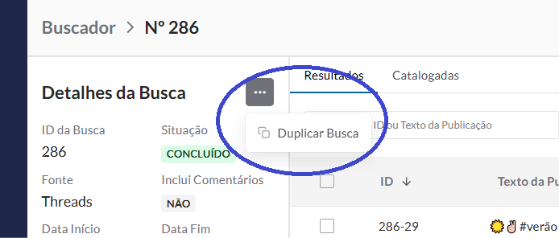
2.3.7 Monitoramento - Enviar para Admitida
Na aba Catalogadas da tela Buscador, o usuário realiza a curadoria das publicações coletadas nas mídias sociais. Nessa etapa, é possível selecionar quais postagens devem avançar para o estado de Admitida, sendo então exibidas na tela de Publicações Admitidas.
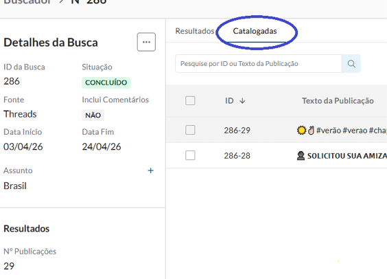
As publicações em Catalogadas não podem ser editadas. A edição só é permitida após o envio para o estado de Admitida, no qual o usuário pode complementar informações ausentes. Por exemplo, quando durante a extração os campos de tipo de mídia ou alegação não foram preenchidos.
Uma vez que as informações estejam qualificadas, o usuário pode enviar a publicação para o estado de Publicação Qualificada, no qual não será mais possível realizar alterações.
Essa etapa funciona como um filtro inicial, garantindo que apenas publicações revisadas e com todos os dados necessários sigam para análise das ferramentas de IA. Dessa forma, somente os conteúdos no estado de Admitida são efetivamente processados pela inteligência artificial.
Exemplo: Vamos considerar a publicação nº 286-29, coletada na tela do Buscador. Para visualizar mais detalhes, o usuário deve clicar na opção Visualizar Publicação.
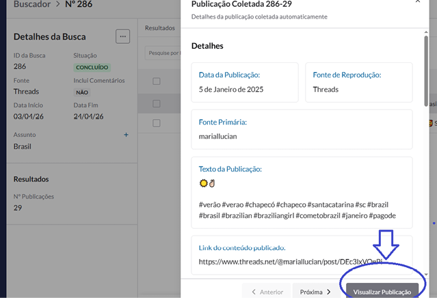
Após o envio, a publicação passa para a tela de Publicações Admitidas, recebendo um novo identificador (ID 95) e permanecendo na situação Catalogada, como destacado em azul na figura a seguir. O usuário pode retornar à tela do Buscador ao clicar no link da Coleta 286-29, destacado pelo quadrado vermelho na figura abaixo.
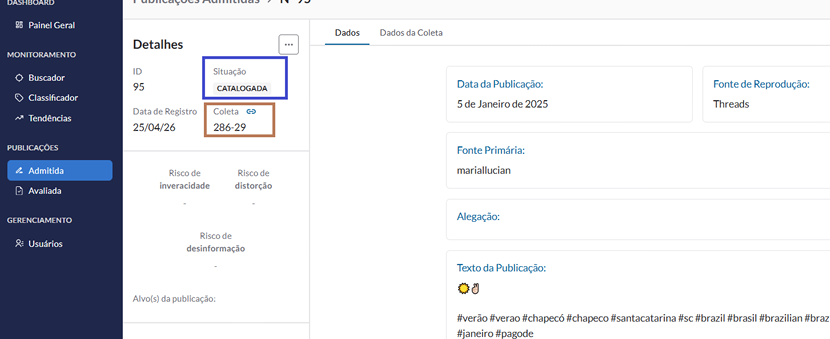
Agora a publicação de Nº 95, na tela de Publicações Admitidas. Nessa etapa, o usuário pode complementar as informações ausentes, conforme necessário.
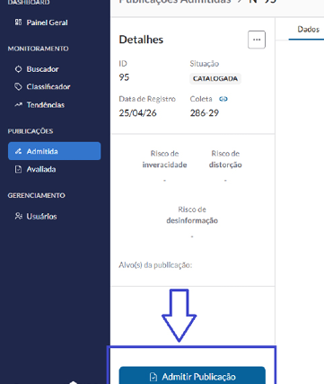
Ao clicar no botão Admitir Publicação, o sistema abre uma caixa de diálogo Admitir Publicação, permitindo que o usuário preencha os campos faltantes, como: Alegação, Alvo da publicação, Data da publicação, Fonte de produção, Fonte primária, Texto da publicação, Link do conteúdo, Upload do conteúdo da publicação
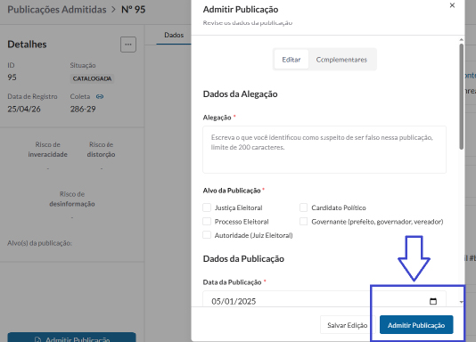
Após preencher as informações desejadas, o usuário pode:
Clicar em Salvar Edição, para salvar as alterações e voltar posteriormente para complementar mais informações. Neste caso, a publicação continua com a situação Catalogada; ou
Clicar em Admitir Publicação no rodapé da caixa de diálogo, para concluir a operação e enviar a publicação para a situação de Admitida. Nessa ação, o usuário deve preencher obrigatoriamente os campos marcados com asterisco vermelho, indicando que são obrigatórios. O sistema não permitirá prosseguir enquanto essas informações não forem preenchidas.
A aba Complementares exibe as informações extraídas durante a fase de Monitoramento de Buscas Agendadas, correspondentes às mesmas informações apresentadas na aba Extração.
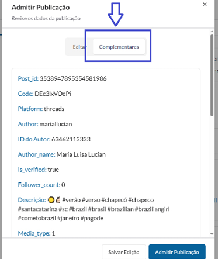
Além disso na tela Publicações Admitidas, ao clicar no ícone de três pontos, o sistema apresenta mais quatro funcionalidades:
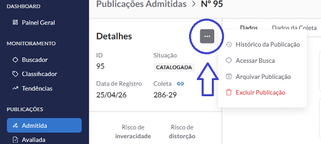
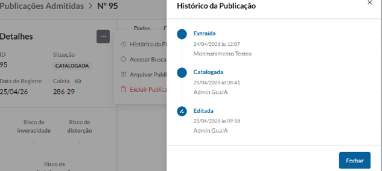
Ao selecionar a opção Arquivar Publicação, a publicação deixa de ser exibida no painel Publicações Admitidas. Ela somente poderá ser visualizada novamente caso o usuário aplique o filtro “Mostrar Arquivadas”.
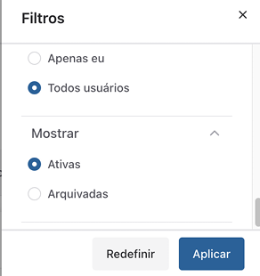
2.3.8 Monitoramento - Classificador
A tela do Classificador tem como objetivo analisar automaticamente o conteúdo de uma publicação e indicar se há potencial de desinformação, discurso antidemocrático ou discurso ofensivo.
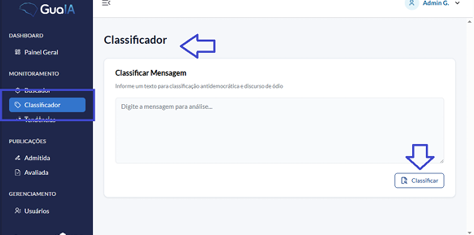
De forma simples, o funcionamento ocorre assim: o sistema lê o texto da publicação e aplica uma série de regras de análise, como se fosse um checklist inteligente. Ele verifica, por exemplo:
se o conteúdo ataca instituições ou o processo eleitoral;
se há acusações sem provas;
se existem ofensas, insultos ou ataques a pessoas ou grupos.
Com base nessa verificação, o sistema apresenta:
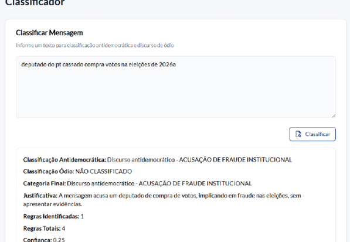
2.3.9 Monitoramento - Tendências
A tela de Tendências apresenta os principais assuntos em destaque nas últimas 24 horas, 48 horas ou 7 dias , com foco nas áreas de Política, Legislação e Governo. O sistema realiza a coleta dessas informações, identificando os temas mais buscados no momento nas redes sociais.
Esses dados são armazenados no sistema e exibidos ao usuário como palavras-chave relevantes, facilitando a identificação de temas em alta que podem estar relacionados a possíveis publicações suspeitas ou com risco de inveracidade.
Além disso, a tela também disponibiliza links de pesquisa nas redes sociais, permitindo que o usuário explore diretamente os conteúdos associados a cada tendência identificada.
O sistema disponibiliza 20 categorias para classificação e visualização das tendências identificadas. Essas categorias permitem ao usuário filtrar e analisar os temas de acordo com diferentes áreas de interesse. As categorias disponíveis são: Automóveis e veículos, Moda e beleza, Negócios e finanças, Entretenimento, Comidas e bebidas, Jogos, Saúde, Hobbies e lazer, Empregos e educação, Legislação e governo, Outra opção, Pets e outros animais, Política, Ciência, Compras, Esportes, Tecnologia, Viagem e transporte, e Clima.
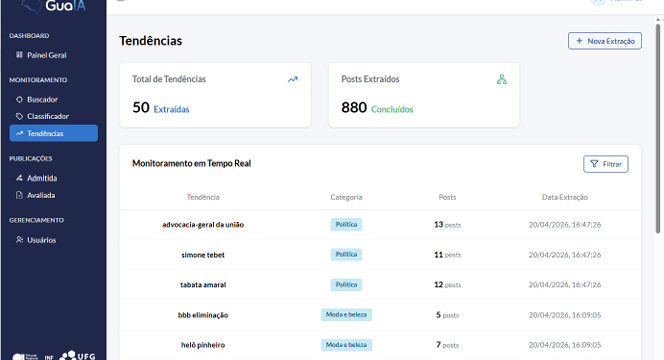
A tela de Tendências exibe o total de tendências identificadas nas redes sociais, bem como a quantidade total de publicações extraídas relacionadas a esses temas.
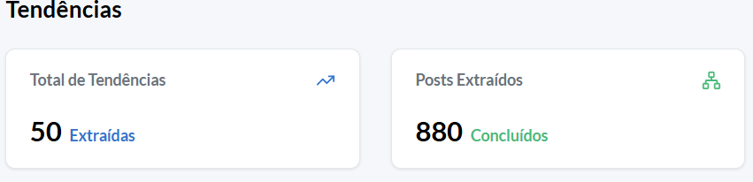
Na tabela de Monitoramento em Tempo Real, o usuário pode visualizar as tendências identificadas, suas respectivas categorias, a quantidade de publicações extraídas para cada tendência e a data da extração. Por exemplo, para a tendência “Advocacia-Geral da União”, classificada na categoria Política, foram extraídas 13 publicações.
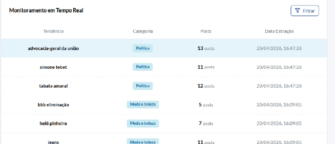
O sistema permite que o usuário aplique filtros para refinar a visualização das informações, podendo filtrar por tendência, categoria e pelo período de extração (data inicial e data final).
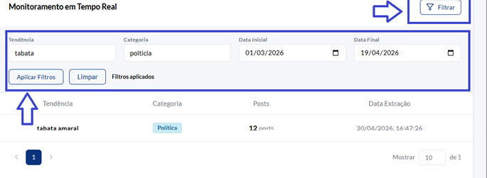
2.3.10 Monitoramento - Detalhes da Tendência
Ao selecionar uma tendência específica, o sistema exibe todas as publicações extraídas das redes sociais relacionadas a esse tema. Nessa tela, são apresentadas as seguintes informações:
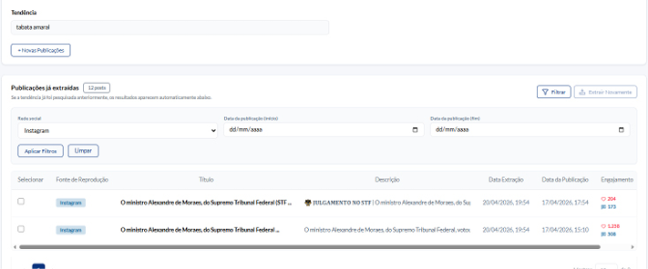
Caso a tendência não apresente nenhuma publicação extraída, o usuário pode realizar uma nova coleta clicando no botão “+ Novas Publicações”.
Essa funcionalidade permite que o usuário:
Selecione a rede social desejada;
Defina a quantidade de publicações a serem extraídas por rede;
Escolha um período específico de extração (data inicial e final) ou opte por coletar as publicações mais recentes.
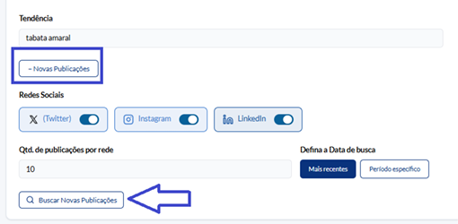
Caso a publicação não apresente os campos Data da Publicação e Engajamento, isso indica que o sistema não conseguiu extrair essas informações durante o processo de coleta. Nessa situação, o usuário pode selecionar as publicações desejadas na tabela e clicar no botão “Extrair Novamente”. Ao realizar essa ação, o sistema executará uma nova tentativa de extração apenas para as publicações selecionadas.
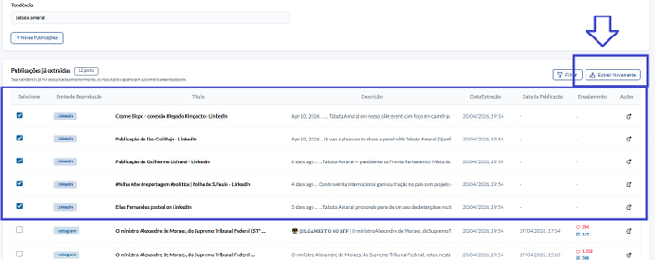
2.3.11 Monitoramento - Detalhes da Publicação da Tendência
Na tela “Detalhes da Publicação da Tendência”, o sistema apresenta informações completas sobre a publicação selecionada, permitindo uma análise mais detalhada do conteúdo extraído.
São exibidos os seguintes dados:
Exemplo: 20/04/2026, 19:47
Exemplo: 20/04/2026, 19:49
Exemplo: a139dc8b-e70b-4319-981f-997b36d5d00d
Exemplo: cearaantenado
Exemplo: 18/04/2026, 13:55
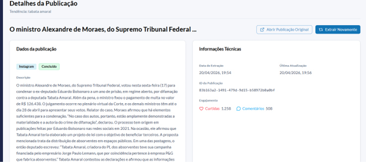
2.3.12 Monitoramento - Agendamento de Extração de Tendência
Na tela de Agendamento de Extração de Tendências, o usuário pode configurar os parâmetros para coleta automática de tendências e publicações nas redes sociais.
Os campos disponíveis são:
Twitter/X Instagram LinkedIn
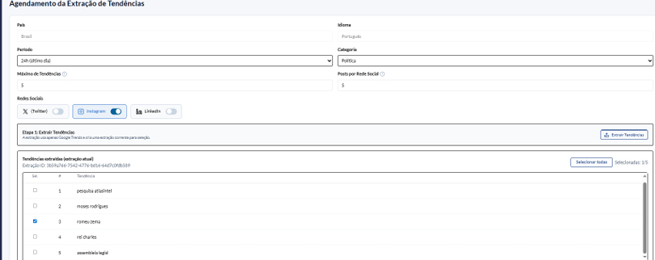
Após configurar estes parâmetros, o sistema realiza a extração das tendências e das publicações associadas, conforme os critérios definidos pelo usuário.
Fluxo de Utilização
O processo de extração e análise de tendências segue o seguinte fluxo:
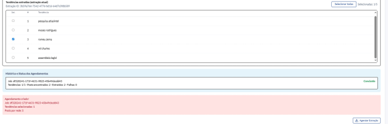
2.4 Painel de Publicações
2.4.1 Painel de Publicações Admitidas
Na tela “Publicações Admitidas”, a postagem está passando por edição ou complementação por um operador humano. Nesse estado, a publicação já pode ser analisada por uma ou mais ferramentas de inteligência artificial (IA).
As Publicações Admitidas podem ter se originado das buscas agendadas ou podem ser cadastradas pelo próprio usuário. Além disso, toda nova publicação cadastrada é automaticamente marcada como Admitida pelo sistema. No topo da página, há um título que indica em qual seção o usuário se encontra, no exemplo da figura abaixo, a tela Publicações Admitidas.
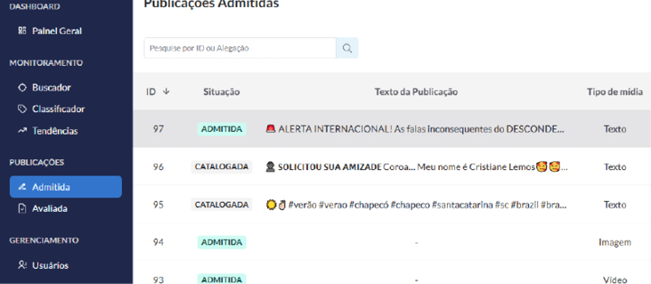
O usuário pode navegar entre as telas de Publicações Admitidas e Publicações Avaliadas.
As publicações com situação Admitida podem ser abertas na tela Editar Publicação, permitindo ajustes ou inclusão de informações ausentes. Após a revisão, o usuário pode enviá-las para o painel das Publicações Qualificadas.
Já as publicações com situação QUALIFICADA ficam registradas de forma definitiva e não podem mais ser alteradas. Neste caso podem ser encaminhadas para a perícia.
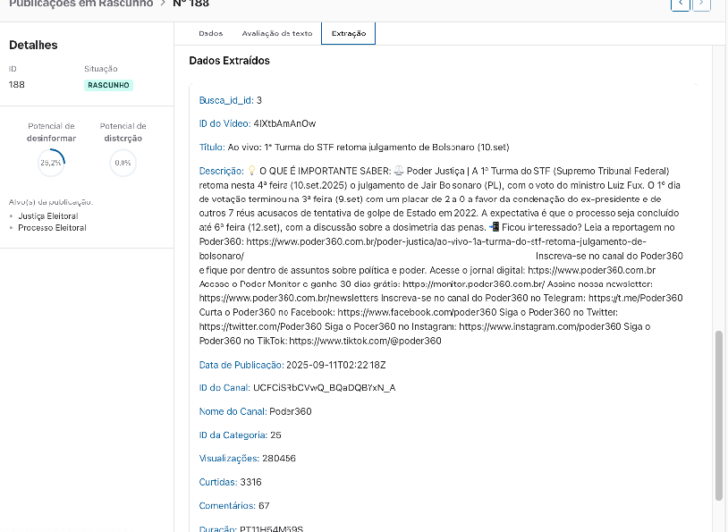
Na aba Avaliação do Texto, o sistema apresenta a análise gerada pela ferramenta de inteligência artificial, incluindo um indicador de potencial de desinformação acompanhado de uma breve explicação. Além disso, a aba disponibiliza o campo Análise Detalhada de IA, que traz informações complementares para apoiar a interpretação da publicação.
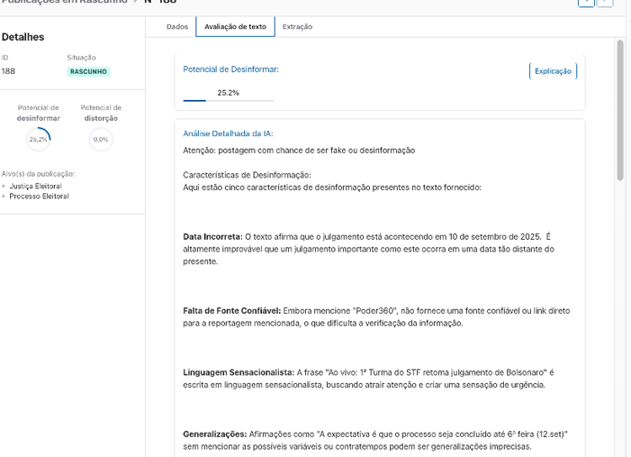
Na publicação em Admitida com ID 97, o sistema disponibiliza duas funcionalidades:
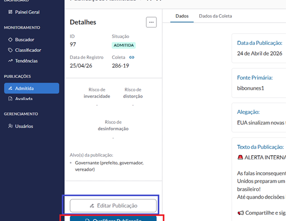
Ao selecionar a opção Editar Publicação, o sistema exibe uma mensagem de confirmação:
“Tem certeza de que deseja alterar os dados da publicação?
Ao concluir, todas as avaliações realizadas pela IA serão refeitas e os pareceres existentes serão perdidos.”
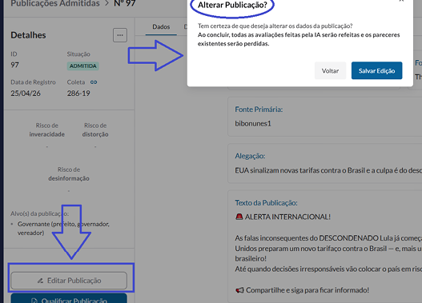
Ao selecionar a opção Qualificar Publicação, o sistema exibe uma mensagem de confirmação:
“Tem certeza de que deseja qualificar a publicação?”
Após a confirmação, a situação da publicação é alterada de Avaliada para Qualificada. A partir disso, o usuário poderá visualizá-la na tela de Publicações Qualificadas, acessível pelo menu lateral esquerdo.
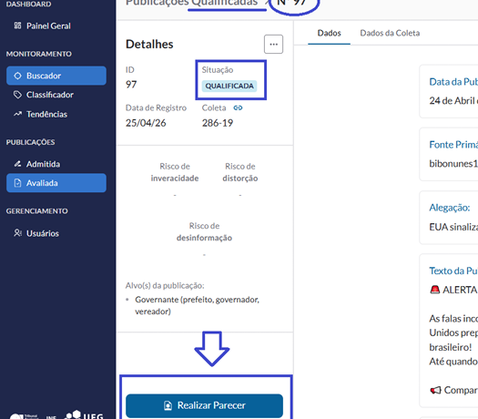
Além disso, ao clicar no ícone de três pontos, o sistema apresenta mais três funcionalidades: Histórico da Publicação, Acessar Busca Arquivar Publicação e Excluir Publicação.
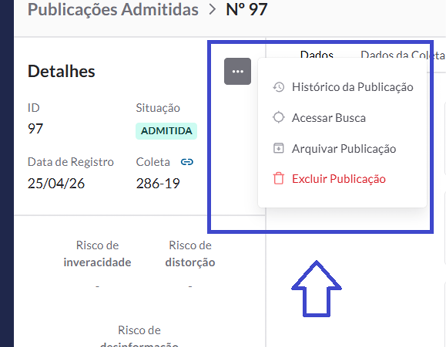
2.4.2 Painel de Publicações Qualificadas
Na tela Publicações Qualificadas, acessado pelo menu lateral esquerdo em Avaliada, o usuário pode realizar pesquisas por ID ou alegação, ordenar os resultados pelas colunas disponíveis, aplicar filtros e ainda personalizar a visualização da tabela, escolhendo quais colunas exibir ou ocultar.
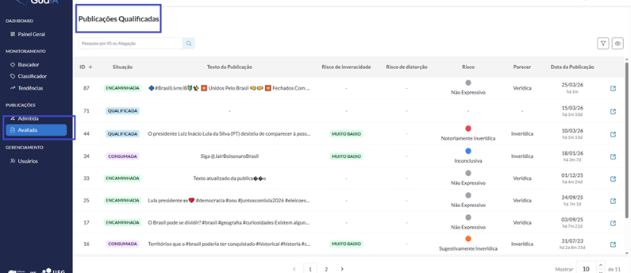
A descrição das colunas da tela Publicações Qualificadas:
Na tela Publicações Qualificadas, o usuário pode selecionar quais colunas deseja exibir no painel, personalizando a visualização de acordo com suas necessidades. No canto superior direito do painel, está disponível o ícone “Visualizar colunas”, que permite essa configuração.
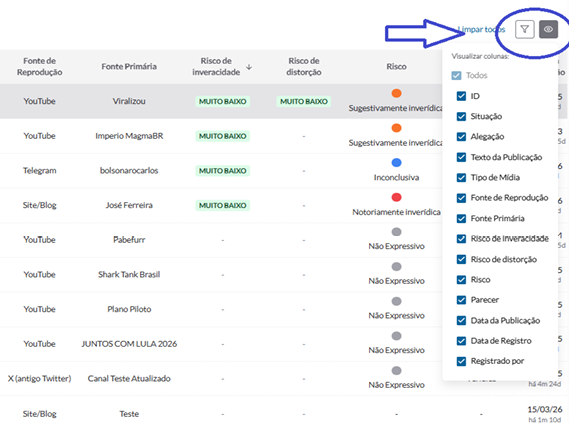
Neste exemplo, selecionamos somente as colunas Situação, Alegação, Tipo de Mídia, Fonte de Reprodução e Fonte Primária.
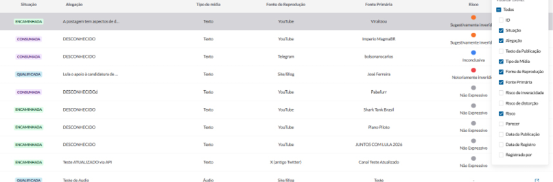
Telas adaptativas
As colunas do Painel de Publicações são exibidas de forma adaptativa, dependendo do tamanho da tela do dispositivo. Em dispositivos menores, como smartphones, um número reduzido de colunas será exibido para otimizar a visualização e facilitar a navegação. Nos dispositivos com telas maiores, como computadores, todas as colunas estarão visíveis, garantindo uma experiência completa.
Neste exemplo, em telas menores, como as de celulares, as publicações são exibidas em formato de cartões, em vez de em tabela.
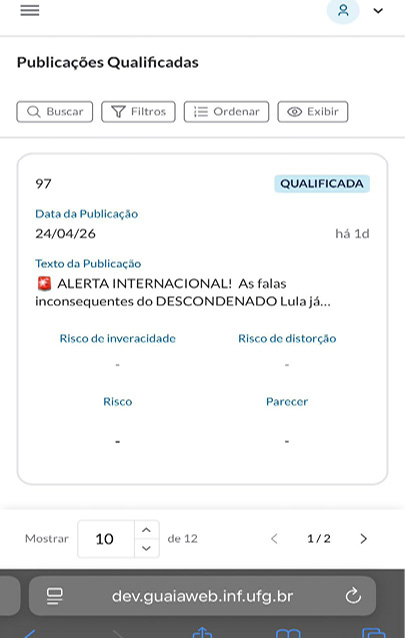
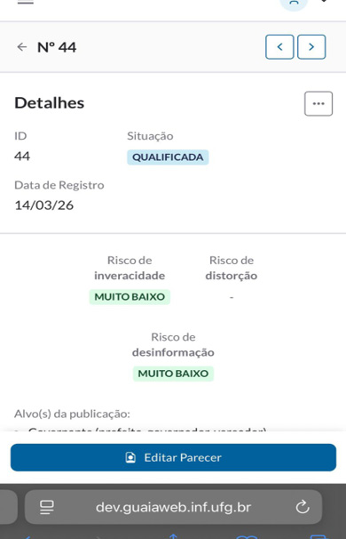
2.4.3 Ordenação no Painel de publicações
O sistema GuaIA permite ao usuário ordenar as publicações diretamente clicando em qualquer um dos títulos da tabela. No exemplo a seguir, a tela exibe o ícone de seta para cima, indicando que a coluna “Alegação” foi ordenada em ordem crescente.
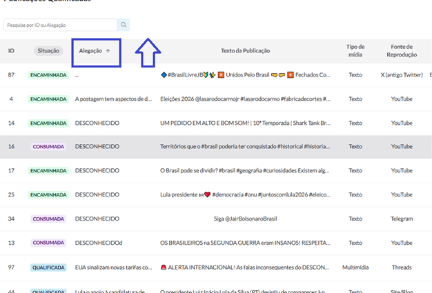
Além disso, foi adicionada paginação no rodapé da página, facilitando a navegação, na qual o usuário pode ir para uma página específica.
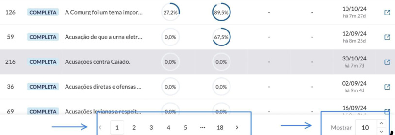
O sistema também apresenta a opção de escolher quantos registros deseja visualizar na tabela, por padrão são 10 registros por página. No exemplo abaixo, são exibidos somente 3 registros na tabela, conforme a quantidade informada.
2.4.4 Filtrar no Painel de publicações
O usuário pode aplicar filtros por Tipo de Situação, Tipo de Mídia, Fonte de Reprodução, Risco, Parecer, Registrado por, Ativas e Arquivadas. Esses filtros permitem personalizar ainda mais a visualização das informações no Painel de Publicações.
No canto superior direito da tabela, está disponível o ícone “Filtros”, que permite essa configuração. No exemplo abaixo, foi aplicado o filtro por Tipo de Mídia (texto), Situação (Encaminhada) e Fonte de Reprodução (Youtube).
Além disso, o sistema permite ao usuário realizar buscas por publicações específicas utilizando o campo de pesquisa. É possível buscar pelo ID (código de identificação) ou pelo texto da Alegação.
2.5 Detalhes de Publicação
O usuário pode visualizar os detalhes da publicação clicando em qualquer linha da tabela ou no ícone em forma de seta, como na figura abaixo:
A tela de Visualização Detalhada de uma Publicação foi totalmente reorganizada. Na parte superior temos o identificador da publicação (ID).
Do lado esquerdo, a tela exibe os campos ID, situação, risco de inveracidade, risco de distorção, risco de desinformação e alvo da publicação.
Risco de Desinformar = Máx (Risco de Inveracidade, Risco de Distorção)
Isso significa que o sistema considera sempre o maior valor entre os dois riscos para definir o potencial de desinformação da publicação. Dessa forma, garante-se uma análise mais conservadora, destacando o risco mais elevado associado ao conteúdo.
Além disso, ao clicar no ícone de três pontos, o sistema apresenta mais três funcionalidades: Histórico da Publicação, Acessar Busca, Arquivar Publicação e Excluir Publicação.
No lado direito da tela, o sistema exibe cinco abas: Dados da Publicação, Elucidação, Parecer, Encaminhamentos, Dados da Coleta.
Encaminhamento: define o encaminhamento dado para a publicação consumada.
Dados da Coleta: exibem as informações relacionadas ao processo de coleta da publicação, como ID da busca, fonte de reprodução, período da coleta, número de curtidas, visualizações.
2.5.1 Aba Dados
A aba Dados exibe as informações fornecidas sobre a publicação, como data da publicação, fonte de reprodução, fonte primária, alegação, texto da publicação e link do conteúdo publicado.
Alegação: descreve o que você identificou como suspeito de ser inverídico nessa publicação.
Data da publicação: registra a data que foi publicada a publicação suspeita na fonte de reprodução.
Fonte de Reprodução: é um canal de comunicação no qual a publicação suspeita foi compartilhada ou replicada por um veículo de comunicação. As fontes podem ser sites, páginas de notícias, grupos de mensagens instantâneas.
Fonte Primária: veículo de comunicação, nome do jornal/revista, emissoras de rádio e televisão, nome do autor que publicou a publicação na fonte de reprodução.
Texto da Publicação: informa texto encontrado junto da publicação suspeita. Esse texto pode ser a legenda da publicação nas mídias sociais, pode ser a notícia de um site.
2.5.2 Aba Elucidação
A Elucidação corresponde ao resultado da avaliação realizada pelo verificador sobre a publicação. Nessa etapa, o conteúdo é classificado como verdadeiro ou falso, e é definido o seu risco de inveracidade, com base na análise realizada. Nesta aba, são exibidas informações como:
Em casos onde o conteúdo da publicação possui baixa quantidade de texto, o sistema pode não conseguir realizar a análise automaticamente. Nesses casos, será exibida a mensagem:
“Não foi possível realizar a análise do texto devido à baixa quantidade de palavras.”
2.5.3 Aba Parecer
Esta seção contém avaliação humana realizada por um verificador a respeito da veracidade da publicação. Nessa etapa, o usuário define o encaminhamento da análise, atribuindo um parecer e classificando o nível de risco associado ao conteúdo. Os principais campos exibidos são:
O usuário pode editar o parecer da publicação ao clicar no botão “Editar Parecer”. Nessa ação, é possível registrar ou atualizar o parecer da análise, bem como definir o nível de risco associado à publicação.
O usuário pode salvar o parecer como rascunho antes de confirmá-lo. Após a confirmação, a situação da publicação é alterada de Qualificada para Consumada, indicando que a análise foi finalizada e não poderá mais ser modificada.
Se o usuário selecionar o parecer da análise como Verídico, o sistema define automaticamente o nível de risco como Não expressivo.
Cuidados na Elaboração do Parecer
Ao salvar o parecer, seja como Admitida ou Consumada, os campos Parecer Emitido, Risco e Anotações Adicionais são de preenchimento obrigatório.
Estado do Parecer:
Admitida: Permite salvar o parecer sem a concluir, possibilitando futuras edições.
Consumada: Após a conclusão da análise, o verificador deve salvar o parecer como Consumada. Neste estado, a análise é considerada finalizada, e nenhuma alteração adicional poderá ser realizada, conforme indicado na mensagem exibida pelo sistema.
Na tela Publicações Avaliadas, após a conclusão do parecer, a publicação suspeita exibirá os campos Parecer e Risco preenchidos conforme a análise realizada pelo verificador.
2.5.4 Aba Encaminhamento
A aba Encaminhamento é utilizada para definir e registrar o destino dado a uma publicação que já se encontra no estado Consumada. Nessa etapa, o usuário formaliza o envio da publicação para um órgão, sistema ou fluxo externo ao GuaIA.
Ao acessar essa aba, o sistema apresenta um formulário com os seguintes campos:
Observações – permite incluir informações adicionais relevantes sobre o encaminhamento.
Após o preenchimento, o usuário deve clicar em Confirmar Encaminhamento para concluir a ação. Com isso, a situação da publicação é alterada de Consumada para Encaminhada, indicando que o conteúdo foi direcionado para tratamento externo ao sistema.
2.5.5 Elucidação de Mídias
Esta seção exibe as análises realizadas pela Inteligência Artificial sobre os elementos de mídia (imagens, vídeos e áudios) vinculados à publicação suspeita.
É possível que mais de uma mídia seja analisada, sendo apresentada individualmente a avaliação de cada uma.
Quando aplicável, é exibido um mapa de distorção, que destaca visualmente as áreas da imagem ou do vídeo onde há indícios de possível manipulação por Inteligência Artificial.
2.5.6 Aba Dados da Coleta
A aba Dados Extraídos apresenta os dados brutos coletados automaticamente durante o processo de busca nas redes sociais. Essas informações são obtidas diretamente da fonte de origem da publicação e não passam por edição manual, servindo como base para análise e validação. No exemplo a seguir, são exibidos os campos extraídos do YouTube; vale destacar que os campos podem variar de acordo com a rede social de origem da publicação.
Essa aba garante a transparência da coleta, permitindo ao usuário consultar os dados originais da publicação e compará-los com as informações tratadas nas demais etapas do sistema.
2.6 Adicionar Publicação Suspeita
O usuário pode adicionar uma publicação suspeita manualmente preenchendo o formulário. A funcionalidade está disponível no botão “Nova Publicação” no canto superior direito da tela Publicações Admitidas.
Nesta tela, é exibido um formulário para o cadastro de uma nova publicação suspeita. O usuário pode preencher os campos com informações relevantes, como mídias (imagem, áudio, vídeo), textos, data da publicação, e o local onde a publicação foi encontrada. Esse formulário permite a inserção completa dos detalhes necessários para análise da publicação.
Após o usuário informar todos os campos necessários, deve clicar em “Enviar” para salvar no sistema. Feito isso, o sistema redireciona o usuário para a página “Publicações Admitidas”.
Gestão de Usuário
3.1 Perfil de Usuário
Agora o usuário pode atualizar seu cadastro pessoal diretamente, acessando a opção Meu Perfil no canto superior direito da tela.
Nessa tela, o usuário pode atualizar suas informações pessoais, como nome, telefone, e-mail, CPF e cargo/lotação ao acionar o botão Gerenciar -> Editar Dados. Também é possível editar a senha ao acionar o botão Gerenciar -> Alterar Senha.
3.2 Gerenciamento de Usuários
O sistema conta com a funcionalidade para gerenciamento de usuários. Foram implementadas opções para cadastrar, atualizar dados, vincular perfis, inativar e remover usuários, disponíveis exclusivamente para aqueles com perfil de Administrador.
3.2.1 Listagem de usuários
Na tela de Listagem de usuários, o sistema exibe uma tabela com todos os usuários cadastrados, contendo as seguintes colunas: nome do usuário, cpf, e-mail, telefone, perfil de acesso, cargo/lotação, data de cadastro (data e horário da criação do usuário no sistema), último acesso (data e horário da última vez que usuário acessou o sistema), status (ativo, inativo ou excluído) e ícone de três pontos para ver mais detalhes do usuário.
Na Listagem de Usuários, é possível ordenar os registros clicando sobre os títulos das colunas da tabela. O sistema também permite selecionar quais colunas serão exibidas, além de aplicar filtros para refinar a busca de usuários, como por perfil de acesso e status. Já no ícone representado por três pontos, é exibida uma caixa de diálogo com quatro opções: Editar Dados, Redefinir Senha, Desativar Usuário e Excluir Usuário.
3.3 Cadastro de Usuários
Para cadastrar novo usuário, você pode acionar o botão “Novo Usuário” no menu lateral esquerdo ou pelo botão “Adicionar novo usuário” do lado superior direito.
No formulário “Cadastro de Novo Usuário”, é possível registrar os dados pessoais do novo usuário, incluindo nome completo, CPF, Cargo, Telefone e E-mail. Na seção “Configurações de Acesso”, o usuário define o perfil de acesso que será atribuído no sistema. Observação que todos os campos deste formulário são obrigatórios.
3.3.1 Perfil de acesso
O sistema disponibiliza cinco perfis de usuários, cada um com permissões específicas de acordo com suas responsabilidades:
O sistema permite que um usuário tenha múltiplos perfis de acesso, possibilitando a realização de diferentes funções na aplicação.
O perfil de acesso Administrador só pode ser atribuído após o cadastro do usuário no sistema. Para isso, é necessário marcar a opção “Administrador do Sistema”, selecionar o estado Ativo e, em seguida, digitar sua senha para confirmar e salvar as alterações.
3.4 Detalhes do usuário
Ao acessar os Detalhes do Usuário, o sistema exibe um painel com informações pessoais e administrativas do usuário selecionado. Nesta tela, estão disponíveis:
Também é possível, a partir dessa tela, gerenciar o usuário, realizando ações como editar dados, redefinir senha, alterar permissões de acesso, desativar/ativar ou excluir permanentemente.
3.4.1 Alterar Permissões
Ao selecionar a opção “Alterar Permissões”, disponível no ícone de três pontos na linha correspondente da tabela, é possível gerenciar os papéis e acessos de um usuário.
Na tela de gerenciamento de usuários, o administrador do sistema pode alterar as permissões de acesso de qualquer usuário, conforme suas responsabilidades. Os papéis disponíveis para atribuição são alimentador, curador, verificador, analista e administrador. Cada usuário deve possuir pelo menos um papel definido para que consiga acessar o sistema.
3.4.2 Desativar Usuário
Ao selecionar a opção “Desativar Usuário”, disponível no ícone de três pontos na linha correspondente da tabela, o sistema solicita confirmação para a ação, exibindo o nome completo e o e-mail do usuário selecionado.
Uma vez confirmada, o status do usuário é alterado para Inativo, impedindo-o de acessar o sistema até que seja reativado manualmente por um administrador. Após a desativação, uma mensagem verde de sucesso é exibida no canto superior direito da tela.
3.4.3 Ativar Usuário
Ao selecionar a opção “Ativar Usuário”, disponível no ícone de três pontos na linha correspondente da tabela, o sistema solicita confirmação para a ação, exibindo o nome completo do usuário selecionado.
Após a confirmação, o status do usuário é alterado para Ativo, restabelecendo seu acesso ao sistema. Em seguida, uma mensagem verde de sucesso é exibida no canto superior direito da tela.
3.4.4 Redefinir a senha
Ao clicar na opção “Redefinir Senha”, disponível no ícone de três pontos da linha correspondente ao usuário na tabela, o sistema envia automaticamente um e-mail de recuperação de senha para o endereço cadastrado.
O sistema exibe uma caixa de confirmação, mostrando o nome completo e o e-mail do usuário selecionado.
Na figura a seguir, é mostrado o e-mail enviado pelo sistema, contendo uma senha aleatória que pode ser utilizada na próxima autenticação. Após o login, o usuário poderá alterar essa senha para uma de sua preferência.
3.4.5 Editar dados do usuário
Ao selecionar a opção “Editar Dados”, disponível no ícone de três pontos na linha da tabela, o sistema abre uma tela de edição com os dados do usuário previamente cadastrados.
Nessa tela, o administrador pode atualizar informações como nome completo, CPF, Cargo/Lotação, Telefone e E-mail. Após confirmar as alterações, o sistema salva automaticamente os novos dados e exibe uma mensagem de sucesso no canto superior direito da tela.
3.4.6 Excluir usuário
Ao selecionar a opção “Excluir Usuário”, disponível no ícone de três pontos na linha da tabela, o sistema exibe uma mensagem de confirmação, informando o nome completo do usuário. Por exemplo: “O usuário Jul07UserTeste004 será removido permanentemente do sistema. A exclusão não poderá ser desfeita.”
Somente após a confirmação do usuário a exclusão é efetivada, removendo definitivamente o cadastro do sistema.
Observação: Após a exclusão, essa ação não poderá ser desfeita.
Na tela de listagem de usuários, o sistema exibirá o usuário excluído com o campo “Status” indicando “Usuário excluído” em cor vermelha, como mostrado na figura a seguir.
3.4.7 Operações em Lote para Usuários
A gestão de usuários no sistema oferece a possibilidade de realizar operações em massa, otimizando o trabalho do administrador. É possível selecionar múltiplos usuários simultaneamente e aplicar ações coletivas, como ativar, inativar ou excluir.
O sistema exibe uma mensagem de confirmação, informando que os usuários serão restaurados, ou desativados ou removidos do sistema.